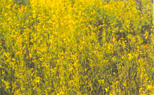

LEGUMES Edible legumes can be grown for food as well as cover. When sown in fall, they provide protection against winter soil erosion. Flowering in spring, they provide a food source for beneficial insects. And, even when the pods are harvested, the vines still provide lots of organic matter - and some nutrients - when turned back into the soil. Keep in mind, however, that your soil will benefit most from an unharvested crop turned under at its nutritional peak.
ALFALFA (Medicago sativa) is a slow-growing perennial with a deep taproot and aggressive secondary roots that can be hard to handle. "Nitro-alfalfa" has become the home gardener's best bet. While faster growing than regular alfalfa, it's mild-mannered and therefore easier to kill. Sow in spring or summer.
BELL BEAN (Vicia faba), also known as fava bean, isn't really a bean at all but rather a member of the vetch family. A vigorous taproot and abundant foliage provide an enormous amount of easily tilled organic matter. Bell beans tolerate acidic soils and temperatures as low as 15°F. Sow in the fall or very early spring.
CLOVERS include both annuals and perennials. Berseem clover (Trifolium alexandrinum) is a productive summer or winter annual that tolerates a wide range of soil conditions. Crimson clover ( T. incarnatum) , a winter-hardy annual growing one to three feet high, won't multiply with runners and is easily eliminated through tilling. Dutch white clover ( T. repens ), a low-growing perennial, is easily cultivated and can be grown as a living mulch in garden paths or between rows of vegetables. Red clover ( T. pratense ) is a quick-growing biennial that can be planted from spring through fall. Subterranean clover ( T. sub terraneum ) is a cool-season reseeding annual, best for sowing under taller crops or in vineyards and orchards. New Zealand white clover (T. repens) is a hardy, long-lived perennial that is taller and more heat-resistant than Dutch white clover. Sow clovers spring through fall, depending on the species.
PEAS are edible legumes and include the cold-hardy field pea (Pisum sativum) and Austrian field pea (Lathyrus hirsutus), both of which produce rapid growth in the spring. Sow in the fall or very early spring. Cowpeas (Vigna sinensis), also known as Southern peas, are grown as a summer annual, putting on rapid growth during hot weather.
SOYBEAN (Glycine max) is an edible legume that grows well in most soils and is great for fixing nitrogen during summer heat. Improves scab control in potatoes. Sow after the danger of frost is past.
VETCHES include several species of winter-hardy vining annual or biennial legumes growing from two to five feet tall. Common vetch (Vicia sativa) is the most vigorous of the vetches and grows on a wide range of soils. Hairy vetch ( V. villosa ) is versatile and tolerant of all but the severest winter temperatures. Purple vetch ( V. atropurpurea ) is less cold-tolerant than the others, making a good winter-kill mulch in areas with hard frost.
NON-LEGUMES
This group includes a variety of grains, grasses and edible green manures.
BARLEY (Hordeum s p. ), a valuable grain, makes an excellent fast-growing spring cover crop. It does well in cooler temperatures and tolerates alkaline soils. Sow in spring or fall.
BUCKWHEAT ( Fagopyrum esculentum ), a weed-smothering broad-leaved annual, reaches heights of two to four feet. This warm-season grain germinates in days, grows rapidly and can be easily tilled under in as little as five to six weeks. Sow spring through midsummer, after all danger of frost has passed.
CEREAL OR WINTER RYE ( Secale cereale ) is an aggressive annual and the most winter-hardy of all cereal grains. It also tolerates drought better than other grains. Its vigorous root system is excellent for improving soil structure, but you'll need a heavy-duty tiller to turn it under. Triticale, a cross between rye and wheat, is a good substitute. Plant spring through fall, up to three weeks before ground freezes.
KALE ( Brassica oleracea ) is a vigorous, cold-resistant member of the cabbage family. After you've harvested your patch for food, till the rest of this winter-hardy annual back in to add iron and copious amounts of organic matter to the soil. Grow any crop the following year except members of the cabbage family. Sow in spring or fall.
MUSTARD ( Brassica sp. ) is a winter-hardy annual that tolerates cool, wet soil. Its deep roots mine the subsoil for nutrients. Sow in spring or fall.
OATS ( Avena sativa ) are a fast-growing grain, especially in cool weather, and are good for adding quick organic matter to the soil. Sow anytime in spring, summer or fall; fall-sown crops will winter-kill in most areas of the country, leaving behind a protective stubble that can be tilled under in spring.
RYEGRASS ( Lolium multiflorum ) is a fast-growing, robust annual that provides a dense blanket of green and tolerates a wide range of soil conditions, even heavy, wet clay. Its extensive fibrous root system goes deep into the soil. Great winter cover in mild areas, though if winter-killed it will still help protect the soil. Sow in spring or fall.
SUDAN GRASS ( Sorghum sudanense ) is a weed-suppressing summer annual growing up to six feet tall. It does best in heat and humidity, is drought-tolerant and good for nematode-troubled soil. Sow in spring and summer.
WINTER WHEAT ( Triticum aestivum ) is a dependable, winter-hardy grain that grows best in cold-winter areas. It germinates quickly, growing an extensive fibrous root system. Sow in late summer or fall.
|
 Flowering mustard makes a great cover crop. |
|
|